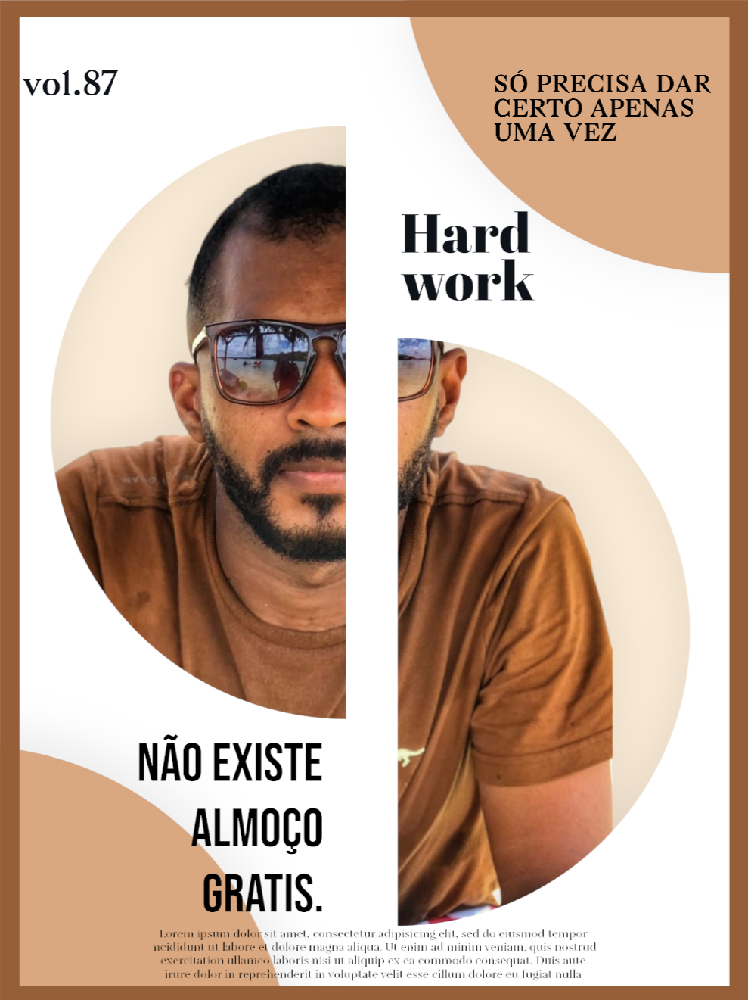

O Poder da Programação.
Óla, Me chamo Bruno Sérgio e em novembro de 2022 fui desligado da empresa que eu trabalhava, vindo da area de eletrica tentei trabalho em outras areas pois, não estava encontrando na industria, afinal tinhamos acado de sair de uma pandemia mundia e as coisas não estavam facil para ninguem. a alguns meses atras conheci o Rodolfo Mori atravez de um video no instagram, no qal falava sobre sa vida de programador, e como poderia trabalhar de casa e viver uma vida melhor, mas com muito esforço, "Não existe almoço grates" como ele sempre diz, então peguei. Nesse momento me interecei mas, não tinha grana para investir. E ao ser desligado lembre das palavras do Rodolfo então descidi investir na minha carreira de Programação, e comecei a estudar Programação hoje estou aqui, e é só o começo. 